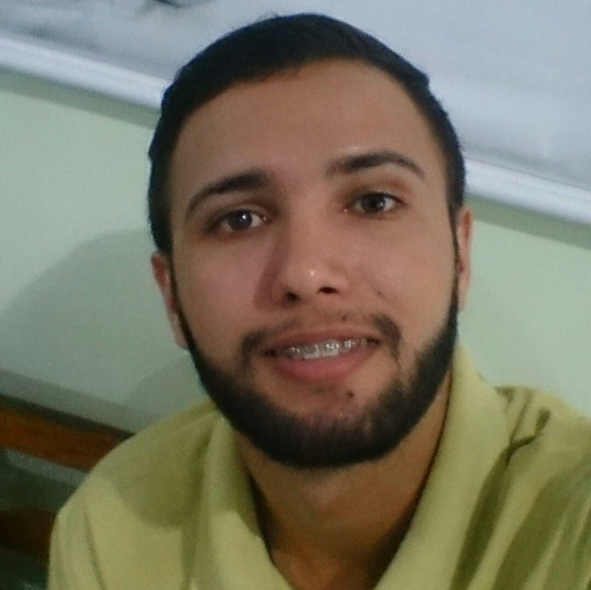

Sobre Mim
Meu nome é
David Brian

Atualmente sou estudante de Programação, do curso Profissão Programador, um curso com ótima didática e qualidade do Paulo Borges.


Atualmente sou estudante de Programação, do curso Profissão Programador, um curso com ótima didática e qualidade do Paulo Borges.
Estas são algumas das minhas experiências profissionais
 GAMES
GAMES
 ESPORTES
INVESTIMENTOS
ESPORTES
INVESTIMENTOS
Tenho uma paixão por games desde a minha infância.
Também gosto de praticar esportes.
Nos últimos anos, desenvolvi um grande interesse em investimentos.
Estes são alguns dos projetos que eu desenvolvi.

Este é um site com conteúdo de Nutrição, toda base de desenvolvimento dele, foi tirada do projeto do Batman que fizemos durante o curso Profissão Programador.
Este é um site de Portfólio, foi desenvolvido junto ao curso, porém, toda parte de contato, eu mesmo desenvolvi.
Esta calculadora de IMC também fiz junto as aulas ao vivo, porém, toda parte de estilização, eu mesmo fiz por conta própria. Achei esse modelo na internet, e reproduzi, com pequenas alterações.
Por fim, este é meu primeiro site de Portfólio, desenvolvido exclusivamente por mim. Estou muito feliz com o resultado.😃😃
Aqui tem algumas de minhas redes sociais. Fique a vontade e mande uma mensagem, uma dúvida, uma dica de melhoria, dê sua opinião, ficarei feliz em poder ajudar.😉😉.
Em breve, meus projetos estarão disponíveis.
Deixo aqui meus agradecimentos por sua visita.
